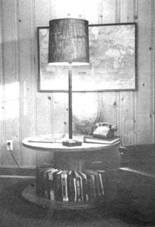

The large cable reels emptied by utility companies can be converted into attractive lamp tables with very little time, effort or money.
These reels, called spools, come in several sizes and are free for the asking. The only other components you'll need for a lamp table are an old workable floorlamp, which can be bought at a thrift shop (the one in the photo cost 75 cents); a round circle of plywood, (these can be found in construction site trash piles); some paint; and a lamp shade. Try the discount stores for a shade (the burlap-textured one shown here cost only $3.00).
Disassemble the spool, saving all hardware and sand, then stain or paint the reel (antiquing is perfect). Paint the lamp parts and the plywood the same color as the base.
Reassemble the spool, insert the shaft of the lamp through the reel's center and cut the circle of plywood to fit around the shaft.
The bottom shelf is just right for a circular bookcase.
|
 |
|
|